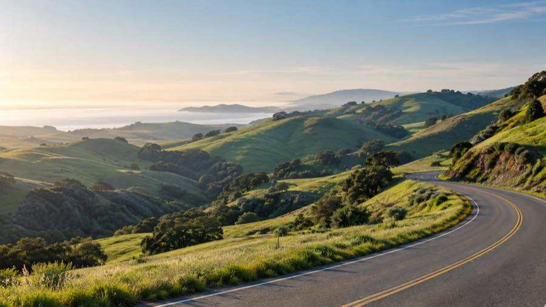

GPX route line01 / 02
long valley loopTurri
A longer GPX-derived loop with sustained climbing and a broad ride footprint.
Distance27.8 mi
Climbing1,447 ft
Track points1743
Map line simplified for display.Owner-approved GPX
Central coast cycling
Two GPX-derived routes, supplied and approved for publication by the site owner.

Published GPX routes: Turri and Bootloop are owner-approved route traces. Select either route to view its details and map line.
A longer GPX-derived loop with sustained climbing and a broad ride footprint.